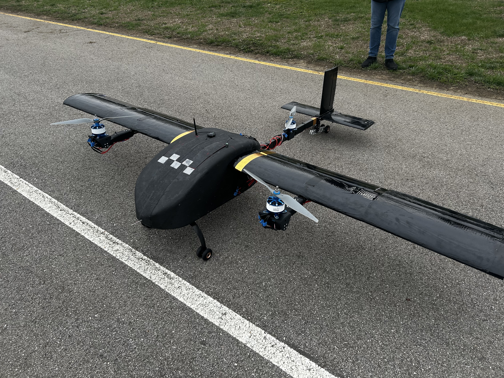
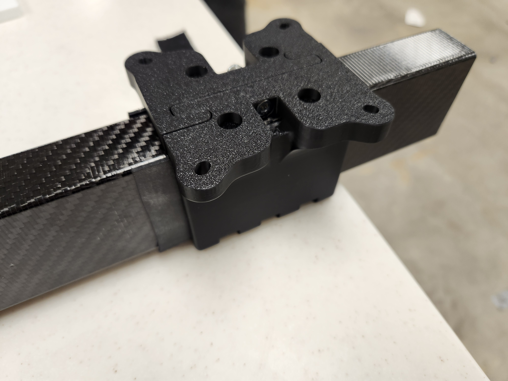
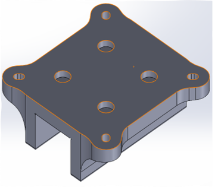
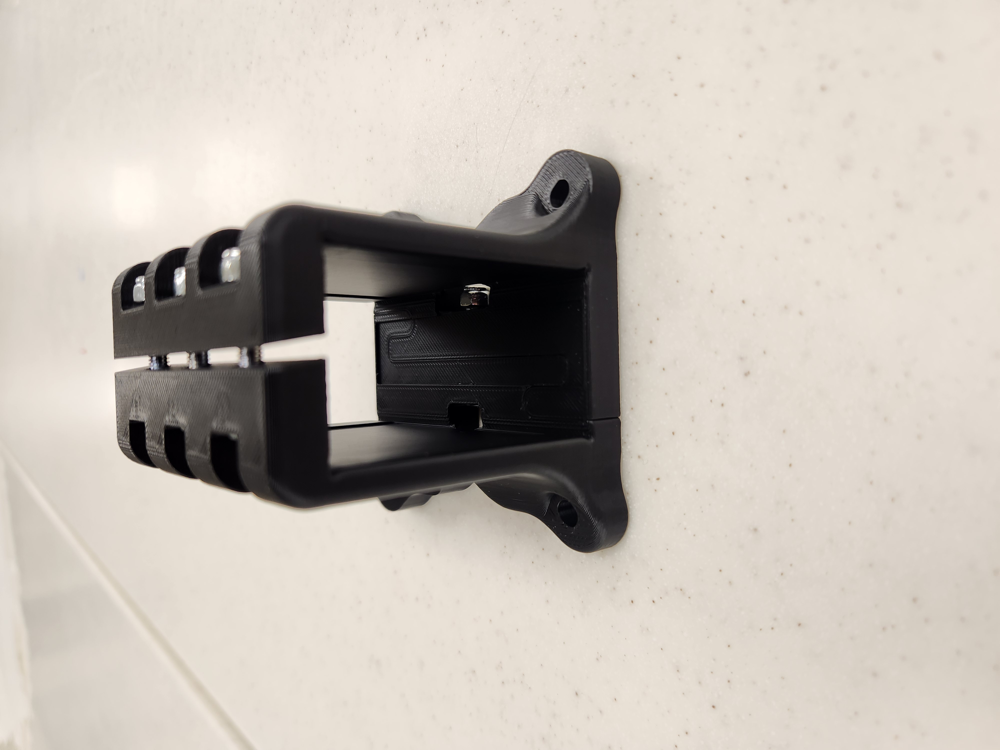
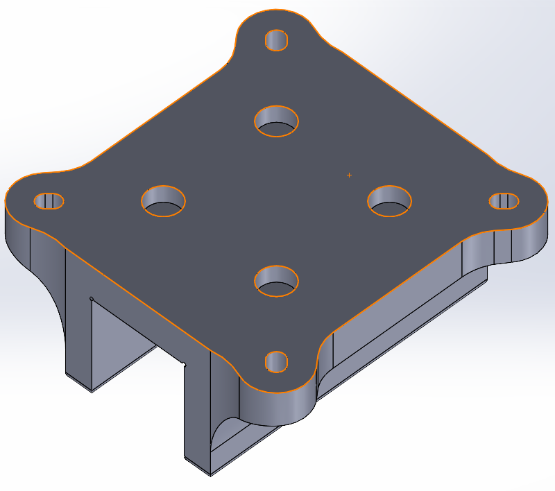
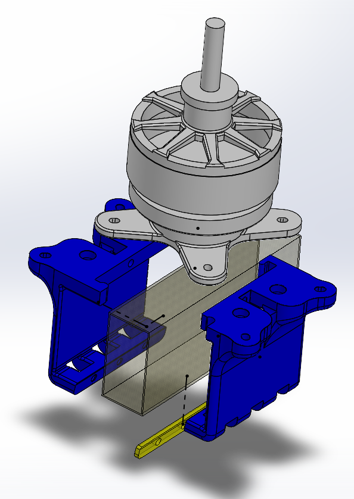
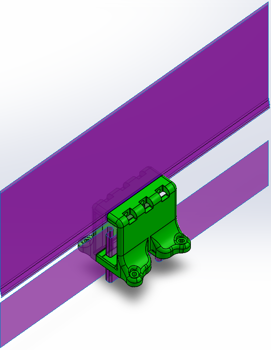
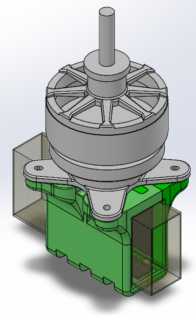

Dodo Rear Motor Mount
Supporting files
Additional photos, video recordings, requirements, and project notes. The main case study presents the selected results; these files provide further context and design history.
Each file can be opened or downloaded individually. Expand a category to browse individual files. HEIC images may require downloading to view.
Documents (4)
Read text
PLA Properties: Density = 1.43 g/cm^3=1430 kg/m^3 Poisson's ratio = .43 Young's Modulus (z) = 3071 MPa = 3071000000 Pa https://um-support-files.ultimaker.com/materials/2.85mm/tds/PLA/Ultimaker-PLA-TDS-v5.00.pdf
documents/matnotes.txt · 0.00 MB · Download
Read text
Left and Right Splits are the ones to manufacture Gasket is left to make up for spacing differences from clamping, should not be manufactured Only the MeSys_RearMotor_Mount_V#_Initials.SLDPRT should be edited to update the assembly.
documents/readme.txt · 0.00 MB · Download
Read text
Butyl Rubber Sheet - https://www.mcmaster.com/8609K45/ Gap to close on each side: 0.025 inches Set notch depth: .015 inches Rubber sheet thickness: 0.0625 inches After compression set (assuming 25% compression set): 0.046875 inches Real gap to fill on each side: .04 inches Required compression amount (%): (0.046875-.04)/.04*100=17.1875%<100% Young's modulus (<100% compression): 1.5 MPa Maximum allowable strain (negative, assuming still .003 inches sticking out):
documents/rubberchoice.txt · 0.00 MB · Download
Read text
Overview: The Rear Motor Mount is a tailored design for securing a rear motor on a UAV tail boom. This design avoids the risk of tail boom composite delamination by eliminating the need for a bolt, improving both durability and manufacturability. Design Parameters: • Mostly 3D-printed - Fits on print bed - Minimal supports • Can securely clamp onto the tail boom • Can sturdily hold the motor Components: • Mount - surrounds the tail boom and creates a clamping force by closing a gap at the bottom; note that its material choice also limits the maximum clamping force possible, given that it is the most likely component to fail as a result of compression or shear from bolt tension and thereby limits the allowable normal force applied by the bolts (calculations can be found in "Rubber Strip Calcs.xlsx") - Left Split - Right Split • Butyl Rubber Strips - compression on the rubber strips provides the normal force and high frictional coefficient to grip onto the sides of the tail boom • 4x Bolts/Locknuts - clamps the two mount halves together around the tail boom to produce the strong clamping force needed to keep the rear motor in place
documents/Summary - Rear Motor Mount.txt · 0.00 MB · Download
Media/Images (8)

media/images/full-plane.jpeg · 7.07 MB · Download

media/images/mounted-printed-proto.jpg · 1.87 MB · Download

media/images/originalversion.png · 0.04 MB · Download

media/images/printed-assembled-proto.jpg · 0.78 MB · Download

media/images/v1-iso.png · 0.08 MB · Download

media/images/v3-1-hl--exploded.png · 0.23 MB · Download

media/images/v3-2-beforesplit.png · 0.09 MB · Download

media/images/v3-2-iso.png · 0.15 MB · Download


Notes (1)
Read text
# Dodo Rear Motor Mount ## Purpose Secure the rear motor without modifying the composite tail boom. ## Requirements and constraints - Clamp securely around the existing boom. - Retain the motor and integrate with the aircraft. - Use mostly printed parts sized for the print bed with minimal supports. - Account for mount strength when limiting bolt preload and contact force. ## Engineering contribution Redesigned the mount around the existing tail boom, using two printed halves, butyl rubber contact strips, and four bolt/locknut pairs. Iterations focused on motor retention, clamping contact, and printability. ## Outcome and limits Printed prototypes and final aircraft assembly photos document the mount’s development and integration. ## From a through-bolt concept to a split clamp Before: The inherited mounting approach required a through-bolt in the composite boom, raising a delamination concern. After: Developed a two-piece clamp around the existing boom. Later geometry adds compliant side and top/bottom rubber contact pieces; four bolt/locknut pairs close the clamp. The notes do not establish tested clamp-load or delamination margins.
project-notes.md · 0.00 MB · Download